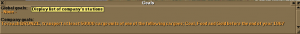
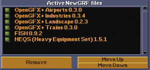
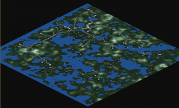
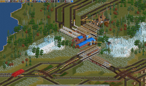

Fun with NoCarGoal
This is a play experience report with Zuu’s NoCarGoal game script which sets the goal to deliver a fixed amount X of one, two or three cargos withing a given timeframe (winning bronze, silver or gold medal respectively). Cargos are chosen randomly upon startup.


Goal for NoCarGoal run 2
Idea
Recently anythenorth suggested a game script which allows for an evening of fun which breaks the existing patterns. Zuu quickly wrote the NoCarGoal script and a few evenings later andythenorth, Yexo, Zuu, frosch and myself went for two tests of this game concept – and we all agreed that it was marvelous and a good way to have loads of fun when you don’t want to spend days on a single game. NoCarGoal requires at least nightly OpenTTD (we use r24494) or OpenTTD 1.3. The maps played were arctic maps 512×512 tiles with HEQS, FISH and some OpenGFX+ NewGRFs:


NewGRFs used in 2nd game with NoCarGoal
The time limitation in both sessions was 7 years which gave us just a bit short of two hours of playing time – just the right timeframe for us. In the first game we went for 25.000t as goal to be reached, in the 2nd one we went for 50.000t (see first image).
In the first game, starting 1950 we had to deliver a total of 25kt of each, coal, gold and oil, to an arbitrary location within those 7 years game time. This kept us pretty busy, though by the end of year 6 we could be pretty sure that we will reach the aim – and we won our gold medal, fulfilling the goal for all three cargos – maybe not easily as it took us 5 people being busy all the time, but we managed it with quite some margin in the end – even though we played it also with infrastructure maintenance costs switched on.
In the 2nd game we decided to push us a bit further: 50kt of each cargo within those 7 years. The cargos chosen for us by the GameScript this time were coal, food and gold. A secondary cargo! But well, farms are around plenty. We allowed us this time a few minutes to survey the map, decide on how we start. We started with a coal line in order to get some cash quickly which allowed also to be extended to a food processing plant. But 50kt gold transported in 7 years, starting from scratch?
In the end, after 7 years (this 2nd game lasting from 1960 to 1967), the map looked like this:


Final Map after 7 years of playing in the 2nd run of NoCarGoal
and our most busy station, the one at the food processing plant was a bit “dynamically grown” but we reached the food target 2 months before the end of 1967:


Final state of the dynamically grown, most important food processing plant. No time for beautiful building 🙂
But we failed to deliver 50kt of gold, we were short 620t. But it’s not implausible to think that it was also feasible – but this way we “only” won the silver medal this time 🙂
What to mind
If you try to configure such game for yourself, grab the NoCarGoal script from bananas and activate it in the Script/AI settings. The crucial thing is to get right the cargo amount with respect to the play time and the amount of people helping to achieve it concurrently. Also if different teams compete, the thing would look different yet again. Longer play time makes things somewhat easier as a quick start then is not as crucial anymore than for a shorter play time. From our perspective this two hours of play time was “just right”, kept us focused and things interesting. One person alone, of course would never have met the goals as our build speed with 4 or five people concurrently becomes important after game year one or two as soon as enough money flows in for all to help concurrently.
Categories: Community News, Gameplay